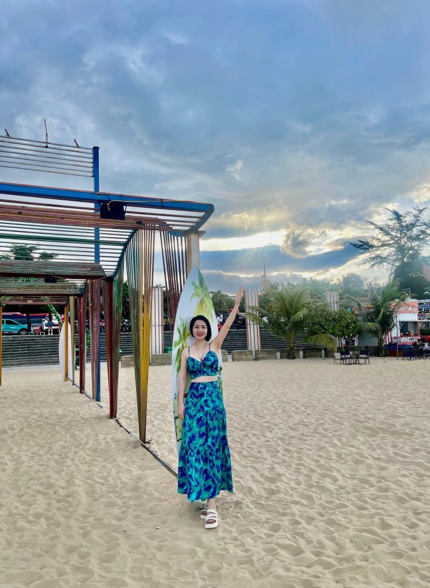

Khi bóng dáng người khách đã khuất hẳn sau rặng cây, không gian trong chòi lá trở nên tĩnh mịch đến mức tiếng thở của chúng tôi cũng trở nên vang vọng. Tôi dịch chuyển sang sát cạnh Nhung, một tay vòng qua eo cô ấy, tay kia lùa vào mái tóc mềm mại, ghé sát vào vành tai nóng rực của cô ấy mà thì thầm, giọng khàn đặc, đầy vẻ ép buộc và khêu gợi:
“Em thấy không? Chỉ là một kẻ qua đường thôi. Chẳng ai biết dưới cái bàn này, em đang thuộc về ai đâu. Nhìn em giờ này… núm vú còn đang dựng đứng lên vì thèm muốn kìa.”

Tôi áp sát môi vào dái tai cô ấy, cắn nhẹ một cái rồi gằn giọng, lời lẽ đầy sự tục tĩu: “Bú đi. Anh đang đau nhức hết cả rồi. Cái lồn của em hôm qua đã vắt kiệt anh, giờ cái cặc này đang dựng đứng lên chỉ chực chờ được họng em nuốt trọn thôi. Đừng có tỏ ra thanh cao nữa, tối qua em chẳng phải đã nếm đủ mùi vị của nó rồi sao? Ngậm lấy nó đi, làm cho anh sướng, cho anh thấy cái miệng dâm đãng của em lúc này đang khát khao thứ này đến nhường nào.”
Nhung thở dốc, đôi mắt cô ấy long lanh, đầy vẻ sợ hãi xen lẫn sự phục tùng. “Nhưng… ở đây… người ta thấy thì sao…?” cô ấy thào thào, nhưng cơ thể đã bắt đầu mất kiểm soát.
“Thấy thì sao?” tôi cười khẩy, tay kéo khóa quần cô ấy xuống, ép sát hông cô ấy vào đùi mình. “Càng bị nhìn thấy, em càng phải bú thật điêu luyện để che giấu tội lỗi của mình chứ. Bú đi, con điếm của anh, đừng để anh phải dùng tay ép em làm điều đó.”
Sự kích thích từ những lời nói tục tĩu của tôi như giọt nước tràn ly. Nhung không còn chống cự được nữa. Cô ấy run rẩy, đôi tay nhỏ bé lần mò xuống khóa quần tôi, kéo phắt nó xuống. Cậu nhỏ của tôi bung ra, cứng đờ và nóng rực, ngay lập tức chạm vào làn da đùi mịn màng của cô ấy.
Nhung xoay người một cách điêu luyện, cô ấy ngả hẳn cơ thể lên đùi tôi, tư thế ngồi trên ghế mà phần thân trên đổ ập xuống vùng hạ bộ của tôi. Cô ấy há miệng, đón lấy đầu khấc đang cương cứng, mút mạnh một cái đầy thèm khát. Tiếng “chùn chụt” dâm đãng bắt đầu vang lên trong cái chòi kín đáo. Nhung vừa mút vừa ngước đôi mắt đờ đẫn nhìn tôi, bàn tay cô ấy đặt lên đùi tôi, siết chặt như thể đang níu lấy hy vọng cuối cùng.
“Đấy… đúng rồi… bú mạnh vào…” tôi gầm gừ, tay nắm chặt lấy tóc cô ấy, ép đầu cô ấy sâu thêm vào cuống họng. “Em là con đĩ dâm đãng nhất mà anh từng biết. Hãy cho anh thấy em thèm khát cái cặc này đến mức nào đi!”
Nhung không đáp, cô ấy chỉ biết vùi đầu vào giữa hai chân tôi, vần vò thứ vũ khí của tôi bằng tất cả sự điêu luyện và cuồng nhiệt nhất. Không gian chòi lá lúc này không còn mùi thức ăn, chỉ còn mùi vị của dâm dục, của nước bọt hòa cùng hơi ấm từ cơ thể đang hòa quyện vào nhau trong một màn kịch tội lỗi mà cả hai đều tình nguyện diễn đến cùng.
Trong tư thế Nhung đang ngả người trên đùi tôi, vùi đầu vào giữa hai chân để phục vụ “cậu nhỏ” bằng cái miệng dâm đãng, tôi tận dụng triệt để cơ hội để khai thác mọi điểm nhạy cảm trên cơ thể cô ấy. Một tay tôi ghì chặt lấy mái tóc cô ấy, vừa là để cố định đầu Nhung, vừa là để ép cô ấy phải nhận trọn vẹn sự thống trị của tôi vào trong khoang họng. Những ngón tay tôi luồn sâu vào chân tóc, kéo nhẹ khiến cô ấy phải ngửa cổ, tiếng rên rỉ nghẹn đặc phát ra càng khiến không khí thêm phần nghẹt thở.
Tay còn lại của tôi không chút do dự, kéo phăng vạt váy của Nhung lên tận eo, để lộ hoàn toàn cặp mông tròn trịa, trắng mịn đang run rẩy dưới ánh đèn mờ ảo của chòi lá. Tôi đặt bàn tay mình lên đó, ban đầu là những cái bóp mạnh, nhào nặn khối thịt mềm mại, rồi dần dần di chuyển xuống sâu hơn.
Cảm giác da thịt chạm vào da thịt làm tôi càng thêm hưng phấn. Tôi luồn ngón tay vào giữa hai khe mông, miết dọc theo khe lồn đang ẩm ướt vì dịch tình của cô ấy. Nhung khẽ giật mình, toàn thân cô ấy co rút lại, hơi thở trong cổ họng trở nên dồn dập hơn, nhưng cô ấy vẫn không dừng việc bú mút, ngược lại còn đẩy mạnh đầu hơn vào háng tôi như một lời đáp trả đầy khẩn thiết.
Tôi dùng ngón trỏ và ngón giữa, tách nhẹ đôi môi âm hộ, miết dọc theo khe thịt nóng hổi ấy rồi vòng ngược xuống phía sau. Khi ngón tay tôi chạm tới lỗ đít—nơi vẫn còn nhạy cảm và khép chặt—Nhung khẽ rùng mình, cô ấy buông lỏng đôi chút để đón nhận sự đụng chạm táo bạo này. Tôi ấn nhẹ, di chuyển ngón tay qua lại dọc theo rãnh hậu môn, miết vào điểm G từ phía ngoài, cảm nhận được sự co bóp của cơ thể Nhung theo từng nhịp mút.
Cảnh tượng lúc này thật sự trần trụi: một người đàn bà đang quỳ rạp dưới háng tôi, miệng thì bận rộn với “cậu nhỏ”, còn thân mình thì bị bàn tay tôi vần vò không thương tiếc. Tôi vừa miết dọc theo khe lồn, vừa đẩy ngón tay vào sâu trong những nếp gấp nhạy cảm, cảm nhận được dịch nhờn của cô ấy bết dính trên tay mình. Sự kết hợp giữa việc bị bú cặc điên cuồng và việc tay tôi xâm nhập vào vùng nhạy cảm phía sau khiến Nhung mất hẳn quyền kiểm soát. Cô ấy uốn éo, hai chân kẹp chặt lấy hông tôi, tiếng rên rỉ lúc này không còn là sự e dè mà là những âm thanh đầy đọa lạc của một người phụ nữ đã hoàn toàn hiến dâng sự kiêu hãnh của mình cho khoái cảm.
Cơn khoái cảm của Nhung đạt đến đỉnh điểm trong một khoảnh khắc nghẹt thở. Khi ngón tay tôi vẫn đang miết mạnh vào khe lồn và hậu môn, kết hợp với việc tôi ghì chặt đầu cô ấy, ép buộc cô ấy phải tiếp nhận trọn vẹn sự xâm nhập của mình vào sâu trong họng, cả cơ thể cô ấy đột nhiên cứng đờ lại.
Nhung run lên bần bật, một cơn sóng khoái cảm quét qua cô ấy mạnh mẽ đến mức cô ấy không thể giữ được sự bình tĩnh. Tôi cảm nhận rõ ràng từng thớ cơ trong khoang miệng cô ấy bắt đầu co thắt dữ dội. Nhung không chỉ ngậm, cô ấy siết chặt lấy “cậu nhỏ” của tôi bằng một lực cơ hàm và cơ họng cực đại, khiến tôi cảm giác như máu đang dồn hết vào đỉnh khấc. Cảm giác cái miệng đang nuốt chửng lấy mình, cùng lúc với việc cơ thể cô ấy đang giật nảy lên trên đùi tôi, tạo nên một sự cộng hưởng điên rồ.
Tiếng rên rỉ của Nhung bị chặn lại trong cổ họng, trở thành những âm thanh ứ nghẹn, đứt quãng và đầy khoái lạc. Cô ấy nghiến chặt hai hàm răng, dù không hề làm tôi đau, nhưng lực siết ấy mang theo tất cả sự phục tùng và ham muốn tột cùng của cô ấy. Đôi mắt Nhung trợn ngược, dòng dịch tình từ khe lồn cô ấy trào ra ướt đẫm cả lòng bàn tay tôi, trong khi trong miệng, cô ấy vẫn đang mút lấy “cậu nhỏ” tôi một cách điên cuồng như thể muốn rút cạn tinh khí của tôi ngay tại chỗ.
Tôi không để cô ấy kết thúc dễ dàng. Tôi tăng tốc độ di chuyển ngón tay phía sau, nhấp nhấp liên tục vào lỗ đít cô ấy trong khi vẫn giữ chặt mái tóc, ép cô ấy phải hứng chịu cơn cực khoái này đến tận cùng. “Đúng rồi… nhả hết ra cho anh!” tôi gầm gừ. Nhung buông thõng hai tay, bấu chặt vào đùi tôi, cơ thể cô ấy mềm nhũn ra trên ghế, chỉ còn lại khuôn miệng vẫn đang siết chặt lấy tôi như một cái lồng giam không lối thoát.
Cô ấy run rẩy trong nhiều giây, những nhịp co thắt trong họng yếu dần rồi lại dồn dập, kéo theo nước bọt và dịch tình rỉ ra khóe miệng, chảy dọc xuống cằm. Phải mất một lúc lâu sau, khi cơn co thắt dịu xuống, cô ấy mới từ từ thả lỏng cơ hàm, hé môi nhả “cậu nhỏ” của tôi ra. Nhung gục đầu lên đùi tôi, hơi thở đứt quãng, khuôn mặt đẫm mồ hôi và đôi mắt đỏ hoe vì dư âm của sự đê mê tột độ, hoàn toàn bị khuất phục dưới quyền năng của tôi.